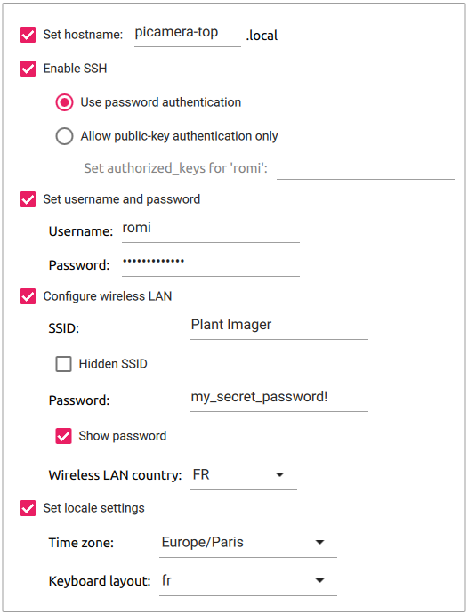

PiCamera - Software setupLink
Flash Raspbian Lite OSLink
The procedure to flash the Raspberry Pi OS on the microSD card AND to set up the necessary options is:
- Open the
Imagerapp - Choose the OS, we use the
Raspberry Pi OS Lite (32bit)as we have an PiZW - Select the storage device (microSD)
- Click the "Advanced options" icon (bottom right)
- "Set hostname" to
picamera, add a number or another indication if you plan to have more than one - "Enable SSH" to "Use password authentication"
- "Set username and password" to
romiandmy_raspberry! - "Configure wireless LAN" to:
- SSID:
Plant Imager - password:
my_secret_password! - Set the "Wireless LAN country"
- SSID:
- Change the "locale settings" to match yours
- Finally, hit the "Write" button to flash the OS to the microSD.
Important
We use the 32bit version with the Raspberry Pi OS Lite NOT Desktop!.
Important
Do NOT forget to replace the (not so) secret password by the one you used!
You should end up with something like this:

Manually setting the advanced optionsLink
Hereafter we show how to manually define the advanced options after flashing the OS without defining any. This requires to boot the RPi with a screen and keyboard.
Warning
There is NO NEED to do this if you have followed the previous instructions on how to configure the advanced options prior to flashing the microSD card!
The first time you boot your RPi with your new image, you can follow the steps of the "Welcome" screen:
- Select a country, language, keyboard layout, timezone.
- Connect to a Wi-Fi network, here our access point:
- SSID:
Plant Imager - password:
my_secret_password! - Change the default user
piand passwordraspberryto: - user:
romi - password:
my_raspberry!. - (Optional) Update packages to their newest version, this OBVIOUSLY requires an internet connexion.
Important
Do NOT forget to replace the (not so) secret password by the one you used!
1. Set the hostnameLink
We strongly advise to give a specific hostname to each device to avoid having the all named raspberrypi.
Important
RFCs mandate that a hostname's labels may contain only the ASCII letters 'a' through 'z' (case-insensitive), the digits '0' through '9', and the hyphen. Hostname labels cannot begin or end with a hyphen. No other symbols, punctuation characters, or blank spaces are permitted.
Choose an option, then reboot the RPi!
It is possible to set the hostname with the raspi-config tool, in a terminal:
sudo raspi-config
1 System Options > S4 Hostname.
Enter the desired hostname, e.g. picamera, and hit <OK>.
It is possible to set the hostname manually by changing /etc/hostname & /etc/hosts with:
export NEW_HNAME="picamera"
sudo sed "s/raspberrypi/$NEW_HNAME/" /etc/hostname
sudo sed "s/raspberrypi/$NEW_HNAME/" /etc/hosts
2. Enable SSHLink
Enabling SSH allows to easily connect to all the devices (connected to the Plant Imager Access Point) using a terminal.
Warning
This represents a security risk if you do not change the default user pi and password raspberry or use a weak password!
It is possible to enable SSH with the raspi-config tool, in a terminal:
sudo raspi-config
5 Interfacing Options > P2 SSH, and select <Yes>.
It is possible to enable SSH with systemctl, in a terminal:
sudo systemctl enable ssh
sudo systemctl start ssh
Once the picamera device is connected to a network, you can SSH to this device using a machine connected to the same network.
You will need the IP address of the device you want to connect to.
It is accessible in a terminal with:
hostname -l
3. Set username and passwordLink
If at the first boot you did NOT change the default pi user & raspberry password you can still do it as follows:
- Create the user
romiwith:This will also create the home directory for this user and ask for a password.sudo adduser romi - Add this user to
dialout,video&sudogroups with:sudo adduser romi dialout sudo adduser romi video sudo adduser romi sudo - Remove the default
piuser with:sudo deluser --remove-home pi
4. Configure wireless LANLink
It is possible to configure the wireless LAN with the raspi-config tool, in a terminal:
sudo raspi-config
1 System options > S2 Wireless LAN, then enter your SSID Plant Imager and password my_secret_password!.
You can edit the wpa_supplicant.conf file to add the Plant Imager network information.
Copy/paste the next lines in your favorite editor, change the psk, then copy/paste this in the terminal:
cat << EOF >> /etc/wpa_supplicant/wpa_supplicant.conf
network={
ssid="Plant Imager"
psk="my_secret_password!"
}
EOF
wpa_supplicant.conf file.
Important
Do NOT forget to replace the (not so) secret password by the one you used!
5. Change the locale settingsLink
It is possible to change the locale settings with the raspi-config tool, in a terminal:
sudo raspi-config
5 Localisation Options, then set L1 Locale, L2 Timezone, L3 Keyboard and L4 WLAN country.
It is possible to change the locale settings with the dpkg-reconfigure tool, in a terminal:
sudo dpkg-reconfigure locales
ROMI softwareLink
We will now set up the necessary ROMI software to enable the camera and make the PiCamera device communicate with the main controller. Notably to be able to capture the images upon request by the Plant Imager main controller.
Install requirementsLink
To install the requirements, in a terminal simply run:
sudo apt install build-essential cmake git libpng-dev libjpeg9-dev
We also deactivate something useless in our case (dynamic linker):
sudo mv /etc/ld.so.preload /etc/ld.so.preload.bak
Clone the sourcesLink
To clone the sources from the ROMI GitHub repository, simply run:
git clone --branch ci_dev --recurse-submodules https://github.com/romi/romi-rover-build-and-test.git
Note
The --recurse-submodules option will automatically initialize and update each submodule in the repository.
Compile the sourcesLink
Then move to the cloned romi-rover-build-and-test directory and compile the romi-camera app with:
cd romi-rover-build-and-test
mkdir build
cd build
cmake ..
make romi-camera
Test the romi-camera appLink
Assuming:
- everything went well in the previous step
- you are connected to the
Plant Imagernetwork - you want to register a camera named
camera-top - it has an HQ (v2) camera lens
You can test the romi-camera app with:
./bin/romi-camera --registry 10.10.10.1 --topic camera-top --camera-version hq --mode still --width 2028 --height 1520 &
Automatically enable the romi-camera app at startupLink
To activate the romi-camera app at startup, we add the previous command to /etc/rc.local as follows:
cat << EOF >> /etc/rc.local
sudo -u romi /home/romi/romi-rover-build-and-test/build/bin/romi-camera --registry 10.10.10.1 --topic camera-top --camera-version hq --mode still --width 2028 --height 1520 &
EOF
This assumes you have created a romi user, if not, change the romi:
- in
sudo -u romito the correct username - in
/home/romito the correct username
Todo
The use of rc.local is obsolete... use systemd instead!